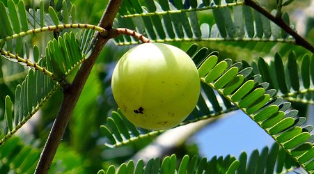

Religious plants are one of the very important parts of India. They are mainly used by Indian people for worshipping gods, goddesses. The religious plants in India are very unique as they not only help you to grow as a better person but also help you to attain mental peace and material prosperity. The plants like rudraksha mala have roots in Hinduism and are believed to be worn by Shiva and his family. On the other hand the sacred fig tree, peepal is regarded as one of the most sacred trees for both Hindus and Buddhists. There are many plants and trees which are worshipped in India. Here are 10 Religious Plants in India which has great importance in many rituals.
This tree is famously popular for its medicinal values and healing properties. It is used in various products like shampoos, creams, ointments, etc. it is also used as a natural pesticide. It can kill over 500 different types of pests by changing the way they grow and by interfering with their metabolism. It is also used as a spermicide in many places.
Tulsi (Bot. Ocimum tenuiflorum) is a small perennial plant and members of the Lamiaceae (mint) family and is an integral part of the religious and cultural fabric of India. It has been venerated for centuries, both as a medicinal herb and revered as a tree that provides spiritual nourishment, offering protection from evil and disaster. Almost every Hindu household in India grows at least one Tulsi plant.
The sacree banana tree is used in many religious ceremonies. The leaves are hanged near the entrance to mark an auspicious occasion and are also used as plates to give prasad. The fruit of the banana tree is offered in religious ceremonies to gods and goddesses, in particular, Lord Ganesha and Lord Vishnu.
This is a deciduous tree and grows fruits that are round and green. The fruit is rich in vitamin C and used to cure insomnia. It is used in hair dyes and cosmetics as well. It improves immunity and removes wrinkles. It is also widely used in shampoos. People make jams, jelly, pickles, and sweets with this fruit as well.
This is an evergreen tree and is also worshipped in many parts of the country. It has heart-shaped leaves that make it so distinctly different. This tree has lots of medicinal values which makes it widely popular in the country. The leaves of the tree are used to deal with asthma, stomach pain, and heart issues. Eating ripe fruits of the tree is helpful in improving a poor appetite. The peepal tree bark is used to reduce itching as well.
The national tree of India has a large canopy and aerial prop roots. It is also considered holy by many Hindus and Buddhists and symbolizes life and fertility. It was considered as the resting place of Lord Krishna. It produces a special kind of rubber and the milk of the tree is used widely in gardening as well. The wood is used in making paper and fastening ropes. Women in Nepal crush the roots of this tree and use it in shampoo, conditioner, and skin products.
The leaves and fruits of the sacred mango tree are used in many religious ceremonies. The mango tree has been cited in the epics like Ramayana, Mahabharata and even in the Puranas. The fruit of the mango tree is an emblem of purity, love and fertility. The leaves of the mango tree are always hung by a string express the auspiciousness of of any occasion.
Ashoka is a very well known evergreen tree which has beautiful and fragrant flowers. The ashoka tree is considered sacred by Hindus, Buddhists and even Jains. In hinduism, this tree is associated to the God of Love, also known as the Kama Deva.
Sandalwood is also considered to be a holy and sacred tree. The fragrant wood of the tree is made into a paste, which is then used in worshipping Lord Vishnu and Shiva. The paste of the tree is considered very pure and holy.
In South India, the coconut tree is considered the most sacred tree. Most of the people there have planted a coconut tree in their houses. Coconut is used many religious ceremonies of the hindus and is even distributed as prasad.